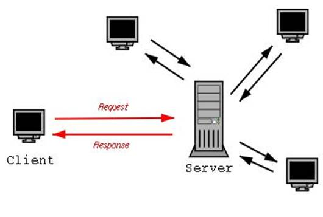

Coding
This non-comprehensive overview is a reference for those who might like to write their own code. Sharing via open source is a way to learn from the best around the world, therefor articles herein are mostly about open source software. If you want us to provide solutions for your business please contact us.
Prerequisites
Remember prerequisites and revision levels are important when combining code modules. Prerequisites and revision levels are important when combining code modules. (repeated for emphasis) When searching the web for answers, understand that timing is critical. You may be reading a document and downloading a module or code snippet that was created several revisions ago. Would you attempt to put a Model A tire on the current years sedan? Why would you think that code written several months ago will work with the new revision of a language or other module? Beware deprecation.
Pseudocode
In the same line of thinking beware of pseudocode. In a Question and Answer example that sort of, kind of, aught to work, but when tested, one finds that it is riddled with syntax errors, or is way out of context because it is missing significant related and required code. The former happens for two reasons. The writer is extremely familiar and just types from memory possibly missing a few important characters here and there, or the code has characters that do not translate well into HTML and needs to have special characters that essentially make the example different from the working tested code.
Fundamentals
Code will be based on a model of the way you and your customers perceive your data world with an algorithm. To help communicate your understanding, you might draw a UML, flow chart, state or other diagrams. In tandem with the model designed, choose a software design pattern such as Object Oriented, Model View Controller, Procedural or Functional which will finally affect the choice of a programming language. At each phase of the project you will need a test plan for your code testing. There may be some parts of the code that do not work as planned and need debugging. Do not spend too much time on or be overwhelmed by the above theories. To get started fast use the Proudly Found Elsewhere theory just copy some already functional open source code from a code repository such as Git Hub, or Open Hub.
While a bottom up approach to learning coding starting with a single line of code like Hello World is one way to start out, then work up to a larger understanding; a top down approach may also be helpful to understand the pattern of Ecosystems which contains Frameworks of Libraries with API's and Plugins organized by a Package Manager on a Computing Platform within which one is studying.
The hierarchy looks something like this:
- Ecosystem
* Framework
A. Library
a. API
b. Plugin
c. Single line of "Hello World"
B. Package Manager
- Computing PlatformHistory
It may help in your pursuit of coding knowledge to study of bit of history of computing. Further you may want to quickly peruse:
-
the seminal work "The Art of Computer Programming" by Donald Knuth to pick up a broad overview of important computing terminology
-
the "Structure and Interpretation of Computer Programs" which focuses on "finding general patterns from specific problems"1,
-
worthy Design Patterns by the Gang of Four.
Web
 A really simple view of the web minus the code and the wires and all the intermediate hardware. See a more complex view of the web at Opte. Once you have seen the interconnectedness of the web on Opte and reviewed the technical details of how that diagram was created your first observation should be that every server and every client has access to all other servers and clients in the world. Yes! Your good customers can find your website on your server and the bad guys can find it too! Code you write, websites and computers under your control must take into account and protect against known hacker exploits.
Client Side
In web parlance a Client such as legacy browsers Internet Explorer, Firefox, Chrome, Opera and Safari exist on ones personal computing hardware as a means to access information on a remote server. The client technology is rapidly evolving as applications for hardware such as smart phones and wearable devices. Rapid evolution and competition has led to some variance in the way each browser interprets the code it receives in a web page. Features that work in one browser may not work at all in others, which has led to the need for cross-browser testing and the development of web testing tools.
Browsers
A web browser is a software application for retrieving, presenting and traversing information resources on a local machine, intranet or on the World Wide Web. The primary purpose of a web browser is to bring information resources to the user ("retrieval" or "fetching"), allowing them to view the information ("display", "rendering"), and then access other information ("navigation", "following links"). (1) Some popular browsers are: Internet Explorer, Firefox, Google Chrome, Opera, Safari and Konquerer. A mobile app is a computer program designed to run on smartphones, tablet computers and other mobile devices.
The browsers high level structure:

DOM
The Document Object Model (DOM) is a platform and language-neutral interface that will allow programs and scripts to dynamically access and update the content, structure and style of documents.[1]
Quick reference to DOM at:
-
IBM Demos
-
some Javascript
-
some PHP
-
HTML5
Toto I have a feeling we are not in Kansas anymore[1]. Hypertext Markup Language Version 5 has changes and updates to version 4. Note the link to a more stable version of the editors draft at the bottom of the W3C page.
Quick reference to HTML5 at:
Javascript
Here javascript refers to just-in-time(JIT) compiled in a client browser →, while the topic in this document titled NodeJS, javascript refers to JIT compiled on a server. Resourceful developers have blurred this clear distinction between client browser and NodeJS server by using the server tools on their development laptop or desktop and requiring NodeJS to serve a plethora of development tools such as pre-compilers, type checkers, linting, and auto refresh from localhost →. This justifiably powerful combination of project code base combined with coding tools requirements leads to a project structure that is uniquely complex in such a way that the project codebase is inherently married to the coding tools used to create the codebase. Editing that codebase requires that the tools chosen by the original architects must be used. Architects choose your tools wisely :)
To simplify this introductory discussion, references listed in this topic generally refer only to client side plain javascript without requiring the additional tools, or the tools are standalone separated from the code base. Obviously as the complexity of the codebase grows the need for the embedded tools becomes clear.
-
Javascript Definition
-
Code Schools
-
Lynda (for Pierce County, WA residents)
-
Codecademy (not free)
-
Step by step tutorial - A smarter way to learn Javascript ( register )
-
Developer Resources
-
Q&A so
-
MDN
-
List of lists
-
by DevDocs.io
-
by Bento.io
-
-
Books
-
-
Tools
-
Patterns
-
Design
-
Learning Javascript Design patterns by Addy Osami
-
-
Modules (in the browser …)
-
MDN IIFE - Immediately Invoked Function Expression
-
Ben Cherry 2010 - IIFE
-
-
Scope and closure
-
Richard 2013
-
Jack Franklin 2012
-
Robert Nyman 2008
-
-
Pearls of Wisdon
-
Refactoring
-
Refactoring Javascript by Evan Burchard
-
Sitepoint - techniques
-
Tales - by Jack Franklin
-
DOM Heavy JS - by Jack Franklin
-
Slideshare by szafranek
-
Hard to test by elijahmanor
-
-
-
Data Structures
-
Linked Lists
-
Examples
-
Articles
-
Interview Questions
-
Libraries
-
doubly ll by jcoglan
-
-
Youtube
-
NodeJS
-
npm package linkedlist
-
-
-
Test Driven Development (TDD)
-
Test Frameworks ( Specification and runner in the browser)
-
Jasmine :link:
-
get it from cdnjs
-
testing angular guide
-
CE Bartling slideshare
-
Lars Thorup slideshare, spies, delays, mocks time and ajax
-
Testing jQuery Dom Events :link:
-
Books - test-driven-javascript-development packtpub, Addison-Wesley
-
QUnit :link:
-
Mocha :link:
-
Ecosystem - javascript in the browser
In the spirit of separation of concerns this is a discussion strictly about javascript in the browser without regard for where the code is deployed from or the development tools that were used to manipulate the code.
-
Ecosystem
-
Framework
-
Library
-
API
-
Plugin
-
Single line of "Hello World"
-
-
Package Manager
-
-
Computing Platform
-
What loads the scripts?
-
When do the scripts start loading?
-
When do they stop loading?
-
When do they start running?
-
When do they stop running?
-
What loads the scripts?
-
Where do the sripts load?
-
-
To be continued someday …
Bibliography
-
97 Things Every Software Architect Should Know
-
Refactoring - Improving the design of existing code
Colophon
-
Asciidoc syntax
-
Edited and previewed with asciidoclive
-
Copy and pasted to nano text editor on development machine.
-
Output formated with asciidoc3 which requires Python3
-
bash commands to publish from
/src/index.asciidocto/dist/index.html:
# asciidoc --version
asciidoc 8.6.9
# cd src
# asciidoc -o ../dist/index.html -a toc -dbook index.asciidoc-
Reference: publishing-ebooks
License

"Book Blue Intro to Coding by Northdecoder is licensed under a Creative Commons Attribution 4.0 International License.